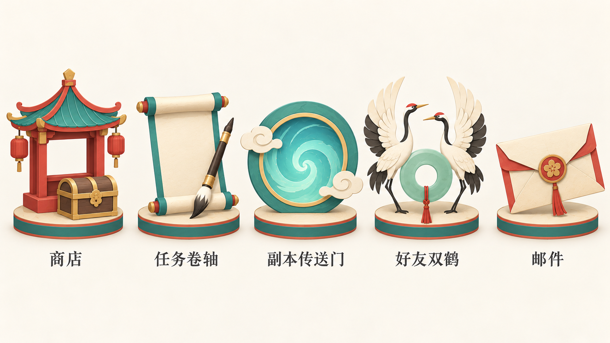
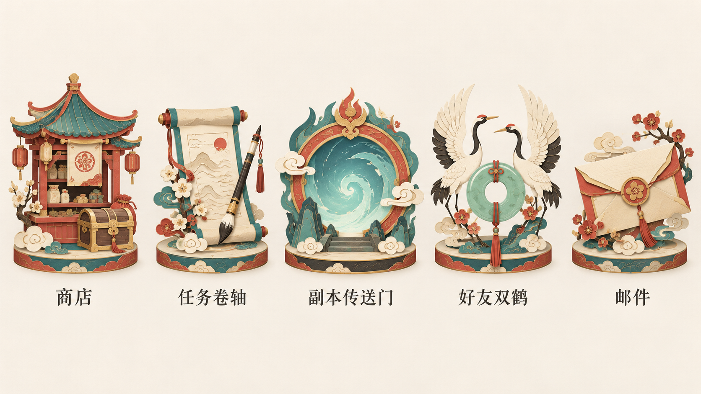
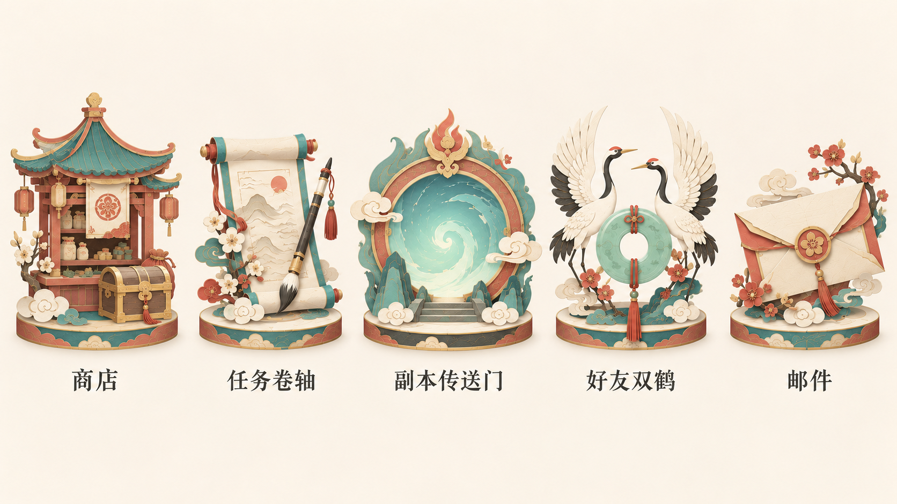
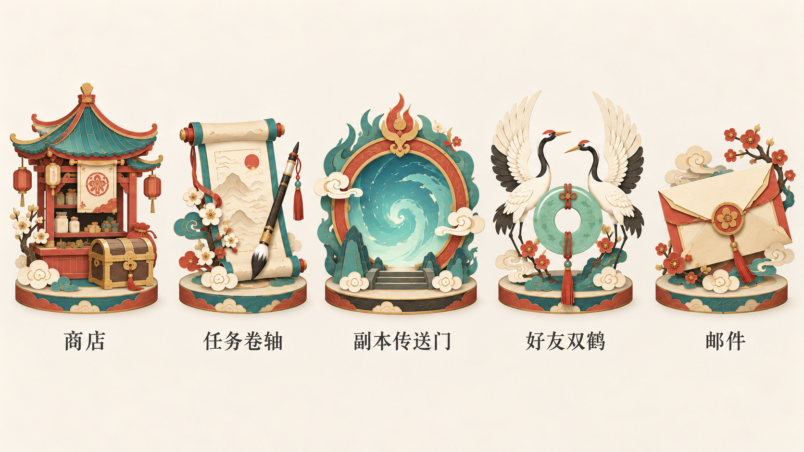
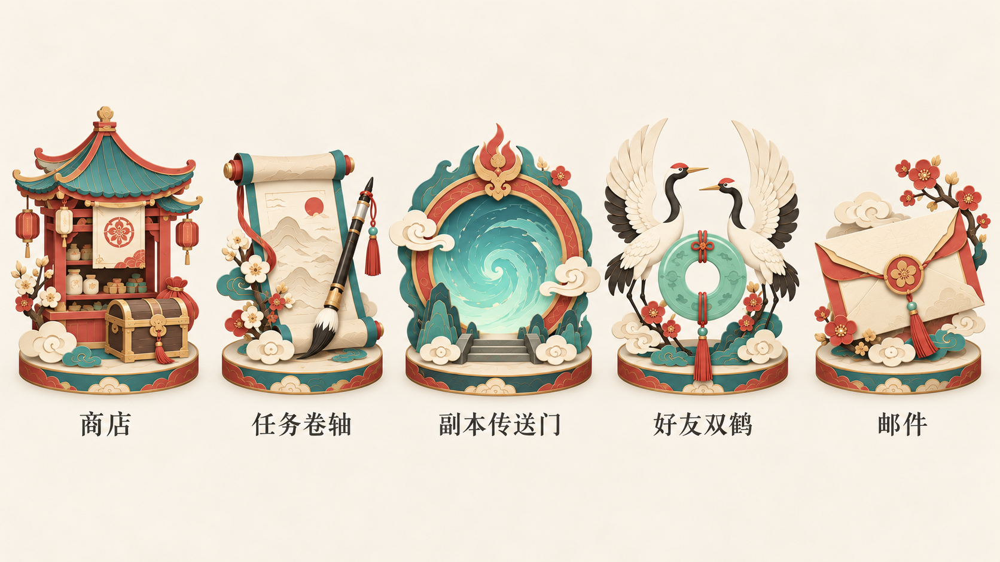
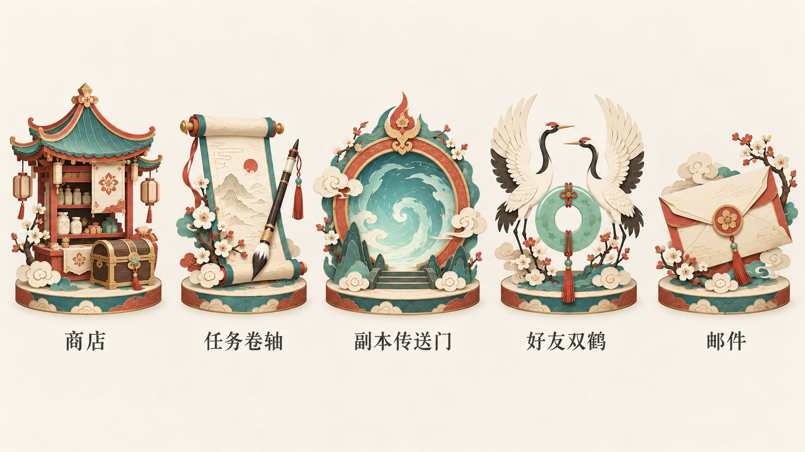
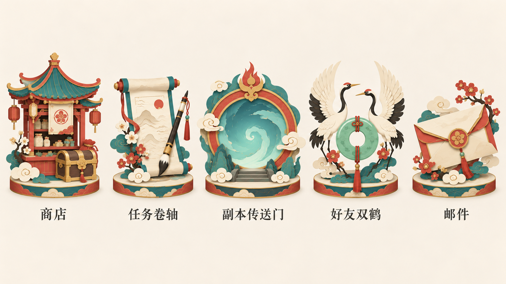

纸艺融合 · 当前游戏简化稿
最新 · 减少装饰细节

商店 · 任务卷轴 · 副本传送门 · 好友双鹤 · 邮件
设计基准1920×1080 · 原图1672×941 · 未分层
风格文字与提示词用户偏好基准已保存。各版仍在讨论，原图按真实像素归档；UI不加入场景背景。
偏好基准 · 已保存用户上传原图

用户反馈：融合舒服。仅作为本轮参考，尚未最终定稿。
1 · 纸艺融合·柔彩水洗
实际图与偏好基准非常接近，青绿和朱砂略柔和，纸层边缘明暗较轻；水彩变化幅度较小。五项与底座协调，但装饰细节仍多。

商店 · 任务卷轴 · 副本传送门 · 好友双鹤 · 邮件
设计基准1920×1080 · 原件1672×941 · 尚未分层
文字风格与完整提示词 · 原图2 · 纸艺融合·雅致岩彩
实际图保留原有红青纸艺融合，矿物色的变化较克制，屋顶与卷轴细线稍清楚；尚未形成显著岩彩颗粒变化。五项装饰仍偏丰富。

商店 · 任务卷轴 · 副本传送门 · 好友双鹤 · 邮件
设计基准1920×1080 · 原件1672×941 · 尚未分层
文字风格与完整提示词 · 原图3 · 纸艺融合·圆润轻卡通
实际图花朵、云纹和底座边缘更圆润，玉环装饰较简化；仍保留大量物件小细节，轻卡通变化较温和。

商店 · 任务卷轴 · 副本传送门 · 好友双鹤 · 邮件
设计基准1920×1080 · 原件1672×941 · 尚未分层
文字风格与完整提示词 · 原图4 · 纸艺融合·工笔细线
实际图轮廓线与卷轴纹样较精细，花枝和云纹仍多；工笔细饰变化比大轮廓变化明显，视觉复杂度未降低。

商店 · 任务卷轴 · 副本传送门 · 好友双鹤 · 邮件
设计基准1920×1080 · 原件1672×941 · 尚未分层
文字风格与完整提示词 · 原图5 · 纸艺融合·简洁平涂
实际图传送门和纸层明暗更平整，花朵形状更概括；仍有大量花枝和底座纹样，不足以视作正式小尺寸简化稿。

商店 · 任务卷轴 · 副本传送门 · 好友双鹤 · 邮件
设计基准1920×1080 · 原件1672×941 · 尚未分层
文字风格与完整提示词 · 原图